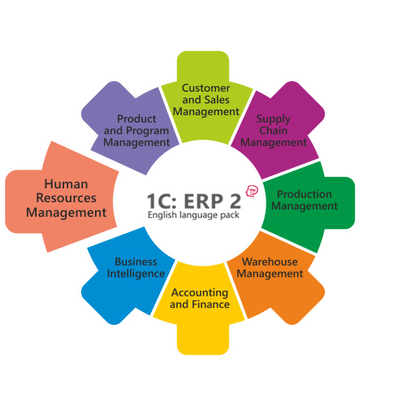

Move away from using a bunch of individual products that do not talk to each other to a complete solution that automates the whole range of your company's processes.
Take informed decisions with critical data that is available at your fingertips and in real time.
Turn your processes transparent allowing to grow your company faster and stay competitive.
Stay informed on how your company operates in the smallest detail.
Stay on top of your business KPIs, estimate operational efficiency, individual departments and employee performance to achieve financial goals.

1C:Enterprise Resource Planning
Features
Integrate production stages into one comprehensive system
Seamless information flow between organization's departments and subsidiaries
Greater efficiencies of your company's production and logistics workflows
Real-time information for taking business critical decisions
Plan and control KPIs
Production planning based on machine load and resources available
Real-time KPI tracking
Integrated business analytics - cost of goods, revenues, and expenses split by the parameters you need to monitor
Automate key workflows
Production management for multi-stage production cycles
Repair and maintenance
Stock and warehouse
Sales and purchases
Customer relationship management
HR and payroll management
Accounting
Control of expenses and cost of goods
Financial management and budgeting
Mobile workplaces and remote work over the Internet
Support for all common OS and Database platforms - Linux, Windows, Mac OS, PostgreSQL, MS SQL Server, IBM DB2, Oracle Database
Why 1C:ERP?
Easily and quickly adapt the system to the changing requirements of growing business